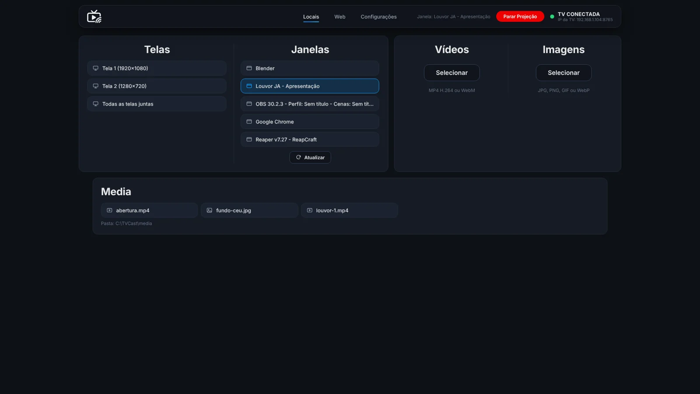
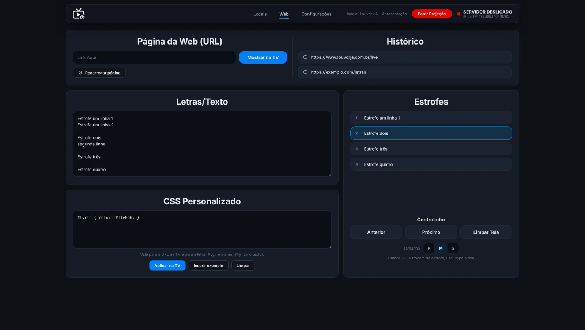

Seu PC na TV, do jeito que você escolher.
O PC é o servidor e o controlador. A TV só mostra. Projete a tela, uma janela, vídeos, imagens, letras ao vivo e páginas da web, pela sua rede Wi-Fi.

Duas peças, nenhuma complicação.
Você controla tudo no PC. A TV apenas exibe o que chega, então ela pode ser simples e leve.
No PC
O servidor e o painel de controle. Você escolhe o que vai para a TV.
Na TV
O app TV Cast encontra o PC sozinho na rede e mostra a projeção.
Tudo o que um culto, uma aula ou uma reunião precisa.
Pensado para uso ao vivo: troca rápida, nada de cabos e controle total pelo PC.
Tela ou janela
Projete o monitor inteiro ou só uma janela, mesmo que ela esteja atrás de outras.
Vídeos e imagens
Envie arquivos para a TV e controle play, pausa, volume e posição pelo painel.
Letras e estrofes
Cole a letra, separe as estrofes e avance com as setas. O texto vai direto para a TV, sem atraso.
Páginas da web
Abra qualquer endereço na TV e personalize a aparência com seu próprio CSS.
Fundo em loop
Um vídeo de fundo roda o tempo todo, pausa quando você projeta algo e volta de onde parou.
Celular como monitor
Confira a projeção pelo celular, com um modo leve, para saber o que a plateia está vendo.
Controle tudo por um painel limpo.
Locais, Web e Configurações em abas. Tema escuro, fácil de usar até com pouca luz na igreja ou no palco.
Ajuste a qualidade da imagem, escolha quando mostrar a marca d'água e veja o estado da conexão com a TV em tempo real.

Abriu, achou o PC, pronto.
O app procura o PC na rede e conecta sozinho. Se a conexão cair, ele volta a procurar e mostra o status na tela.
Pronto em três passos.
- Baixe o APK e instale na TV.Use um pendrive ou um app de transferência de arquivos. Permita a instalação de fontes desconhecidas quando a TV pedir.
- Baixe o servidor e rode no PC.Instale o Python 3.9 ou mais novo, extraia o ZIP e dê dois cliques em
run.bat(no Linux,./run.sh). O painel abre emlocalhost:8765. - Abra o TV Cast na TV.Ele procura o PC na mesma rede e conecta sozinho. Se preferir, digite o IP mostrado no painel.